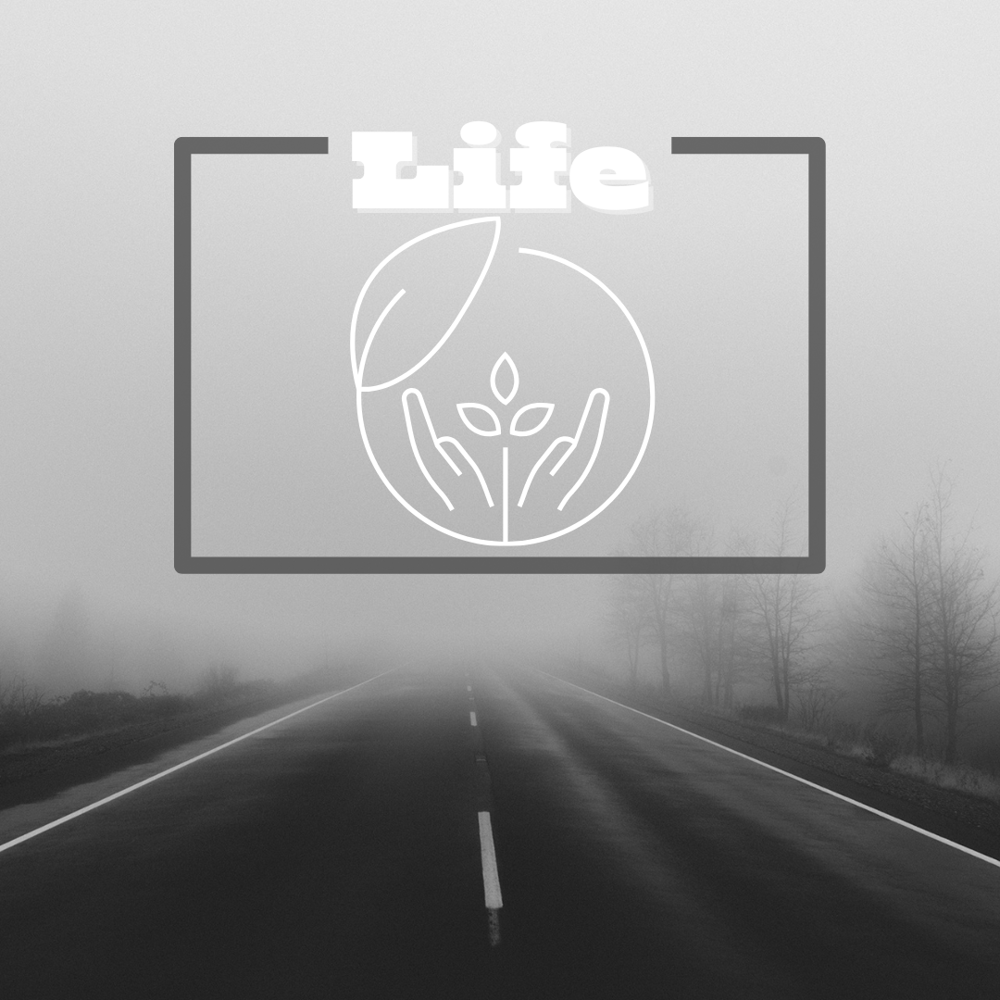

18 Desember 2025
Sejatinya esensi hidup adalah proses belajar yang tidak pernah berhenti. Mulai dari kita bangun tidur hingga kembali memejamkan mata, selalu ada hal baru yang kita temui. Baik dari pengalaman kecil, kegagalan yang tidak pernah kita duga, bahkan hewan dan tumbuhan sekalipun bisa kita jadikan sebagai pembelajaran. Dari pengalaman dan kegagalan, kita belajar untuk memperbaiki kesalahan. Setiap kegagalan menyimpan pelajaran berharga, asalkan kita mau berhenti sejenak dan merenungkannya. Dari hewan kita belajar pentingnya kepekaan terhadap lingkungan, hewan menunjukkan bahwa belajar tidak selalu rumit, cukup dengan mengamati dan mencoba. Dari tumbuhan kita belajar, meskipun menjadi salah satu sumber kehidupan, tumbuhan tidak pernah mencari validasi, cukup dengan berdiam diri. Sering kali kita menganggap belajar sebagai sesuatu yang melelahkan, terutama ketika dikaitkan dengan nilai, target, atau standar orang lain. Padahal, belajar bisa menjadi aktivitas yang ringan dan menyenangkan jika kita memandangnya sebagai kebutuhan diri. Ketika rasa ingin tahu tumbuh secara alami, proses belajar berubah menjadi perjalanan, bukan beban yang harus diselesaikan dengan waktu yang singkat. Agar belajar tidak terasa seperti beban, kita membutuhkan yang namanya jiwa kritis. Sesederhana bertanya tentang informasi yang kita konsumsi, pelan-pelan hal itu akan memperluas pengetahuan kita juga. Dengan begitu, secara tidak langsung kita mendapat banyak knowledge dari berbagai bentuk perspektif. Belajar juga tidak selalu tentang pengetahuan baru, tetapi tentang pertahanan diri. Belajar mengajarkan kita untuk berani mencoba. Kemampuan untuk terus belajar menjadi salah satu bekal terpenting, dengan adanya teknologi yang terus berkembang, cara berpikir manusia berubah, dan tantangan hidup semakin beragam. Mereka yang mau belajar kembali dari nol, mengakui bahwa dirinya belum tahu apa-apa, mau beradaptasi dengan perubahan akan memiliki peluang lebih besar untuk bertahan dan berkembang. Jadi karena kita hidup di “dimensi perubahan”, menjadi seorang pembelajar sepanjang hayat akan membuat kita mampu dalam menghadapi dunia yang sangat dinamis ini. Pada akhirnya, hidup untuk belajar berarti membuka diri terhadap perubahan dan pertumbuhan. Kita tidak dituntut untuk menjadi sempurna, tetapi untuk terus bertumbuh menjadi versi diri yang lebih baik dari hari ke hari. Selama kita masih mau belajar tentang hidup, tentang orang lain, dan tentang diri sendiri, selama itu pula hidup akan selalu memiliki arah dan makna. Belajar tidak selalu harus duduk di ruang kelas atau membaca buku tebal, tetapi tentang bagaimana kita memahami hidup dan mengambil makna dari setiap kejadian yang kita alami.
Kembali